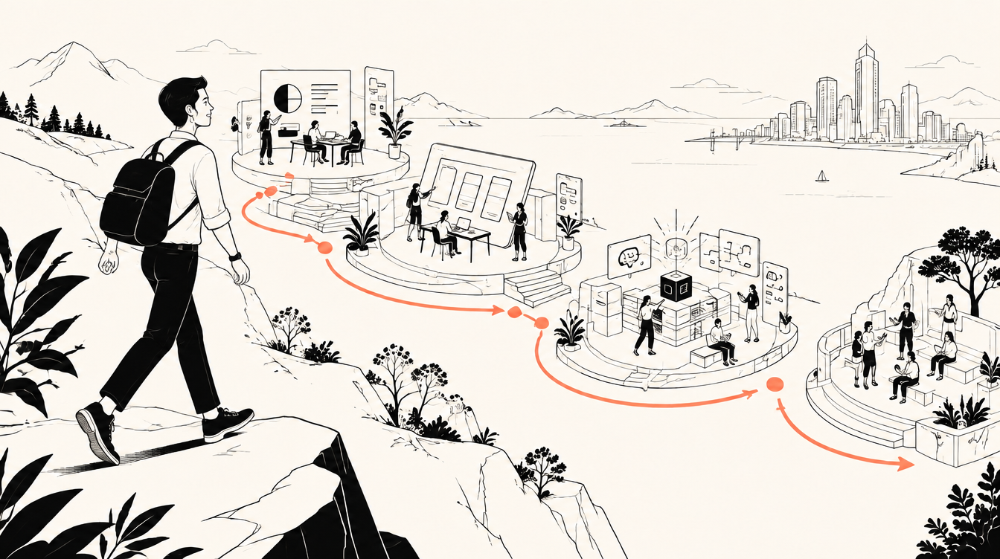

Imagine
Listen to users, connect their needs to a business goal and reframe the brief.

Sittan (Bon) Charoensuwan · AI Implementation & Solutions · Creative Strategy
I bring together AI, strategy, branding, marketing and product thinking to take ideas from discovery through delivery and adoption.
Each stop shows the choices, experiments and people behind the outcome. The route continues through selected work, the experience that shaped it and the ideas I’m exploring now.
Design thinking, project management and agile delivery help me connect communication, branding, product strategy and AI implementation.
Listen to users, connect their needs to a business goal and reframe the brief.
Give the idea a journey, value proposition, product concept and delivery plan.
Prototype, compare options and let measured feedback reshape the solution.
Align owners, approval rules, communication and training before scaling.
Explore what I built, tested and learned in AI implementation, finance operations and audience experience.
I identified the opportunity, built an n8n proof of concept and ran a controlled pilot across two AI-enabled and two comparison locations. Human approval and GDPR data minimization supported rollout to four DACH locations.
Outcome: the standard campaign cycle moved from two weeks to one.
Explore the case →At Tohklom, I interviewed more than 30 SME finance users, tested OCR extraction on more than 500 receipts and designed confidence-based human review. The broader concept connects capture, matching, exceptions and budget visibility.
Pilot evidence: OCR testing and confidence routing. Dashboard screens show the proposed product experience.
Explore the case →QR Event Management moved from an internal pilot to licenses with five market competitors. Their usage data informed improvements, contributing to 25% client adoption in the first quarter.
Beyond the QR product, I explore CRM, live streaming, gamification and rewards as a flexible toolkit for different client goals.
Explore the case →These chapters show how the work connects. The complete roles and dates are listed below, with my CV available to open.
Building practical tools and guides, including the bierpreis.beer MVP with a dataset of 181 Munich venues.
Use-case discovery, controlled pilots, human approval and four-location rollout. I also led the G-fashion mobile CRM launch, reaching 3,000 users in eight weeks.
Led a five-person AI and digital unit that shaped four B2B solutions, alongside design thinking, agile delivery and commercialisation.
Connecting technology choices to customers, communication strategy, brand meaning and business goals.
Mar 2026–presentIndependent AI Product Development · Builder / Product Lead
May 2022–Feb 2026JK-Fashion · Product Marketing Manager
Oct 2020–Apr 2022Tohklom · Innovation Product Lead
Jan–Apr 2020Design AI · AI Business Developer Intern
Oct–Dec 2019QYOBO · Growth Strategist Intern
Jul–Sep 2019Prospeum · B2B Marketing & Brand Communication Intern
Apr–Jun 2019SCHUNK · IIoT & Innovation Researcher Intern
May 2017–May 2018PAD-SED-SAM-SUAN-SEE · Co-founder & CEO
Aug 2016–Aug 2018Merit · Enterprise Account & Strategy Executive
Choose an industry and a lens. Each combination shows an opportunity I would investigate, the risk to manage and a practical test. These are my viewpoints, not delivered client cases.
Bring store feedback, customer behaviour and product performance into one decision about what to stock, adjust or test next.
Earlier signals could reduce guesswork while preserving creative judgment.
Customer data and local context can be flattened into misleading averages.
Compare one category decision made with and without frontline evidence.
Three independent projects you can explore now—each designed to make a different part of AI more understandable and usable.
Explore six layers of legal and organizational responsibility, then use a launch checklist to examine an AI idea.
Open the guide ↗Twelve practical actions across deciding, designing, deploying and monitoring AI.
Explore the actions ↗Build better prompts with seven layers across everyday, engineering, image and code journeys.
Start building ↗